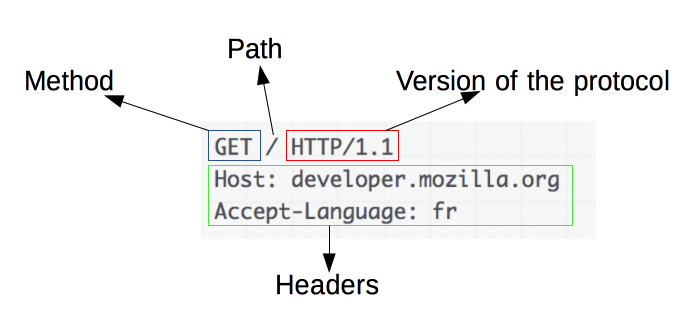

Протокол HTTP
Вашему вниманию предлагается описание основных аспектов протокола HTTP — сетевого протокола, с начала 90-х и по сей день позволяющего вашему браузеру загружать веб-страницы.
Что это такое?
«Аббревиатура HTTP расшифровывается как HyperText Transfer Protocol, «протокол передачи гипертекста».
Протокол HTTP предполагает использование клиент-серверной структуры передачи данных. Клиентское приложение формирует запрос и отправляет его на сервер, после чего серверное программное обеспечение обрабатывает данный запрос, формирует ответ и передаёт его обратно клиенту. После этого клиентское приложение может продолжить отправлять другие запросы, которые будут обработаны аналогичным образом.
HTTP запросы
Запрос состоит из нескольких частей. Первая часть — request line. Вторая — заголовки. В request line мы указываем специальное слово, ещё говорят глагол. В HTTP описаны разные глаголы. Если говорить коротко, они определяют, как реагировать на этот запрос. Каждый реализует свою семантику, но каждая группа команд разделяет общие свойства: так, методы могут быть безопасными , идемпотентными или кешируемыми. Вот некоторые примеры методов. Подробнее о методах можно почитать здесь.
-
GET
Метод GET запрашивает представление ресурса. Запросы с использованием этого метода могут только извлекать данные.
-
HEAD
HEAD запрашивает ресурс так же, как и метод GET, но без тела ответа.
-
POST
POST используется для отправки сущностей к определённому ресурсу. Часто вызывает изменение состояния или какие-то побочные эффекты на сервере.
Запросы содержат следующие элементы: HTTP-метод, путь к ресурсу: URL ресурсы лишены элементов, которые очевидны из контекста, например без протокола (http://), домена (здесь developer.mozilla.org), или TCP порта (здесь 80), версию HTTP-протокола, заголовки (опционально), предоставляющие дополнительную информацию для сервера, или тело, для некоторых методов, таких как POST, которое содержит отправленный ресурс.
Безопасность
Сам по себе протокол HTTP не предполагает использование шифрования для передачи информации. Поэтому внедрили HTTPS, который расшифровывается как протокол безопасного соединения. Принципом работы защищённого протокола HTTPS является обмен ключами шифрования.
Прежде чем ответить на запрос от браузера, сервер предъявляет ключ — SSL-certificate. Браузер проверяет подлинность ключа в Центре сертификации. Если ключ «подошёл», браузер и сервер доверяют друг другу и договариваются о разовом шифре. SSL-сертификат это виртуальный документ, который содержит данные об организации, её владельце и подтверждает их существование. Позволяет узнать сервер и подтвердить безопасность сайта.
- Сертификаты начального уровня с проверкой домена Domain Validation (DV) При выпуске этого типа SSL проверяется только право собственности на домен.
- Сертификаты бизнес-класса с проверкой организации Organization Validation (OV) или Company Validation (CV) При выпуске такого SSL кроме проверки права собственности на домен проводится проверка организации: её юридическое и физическое существование.
- Сертификаты с расширенной проверкой Extended Validation (EV) Этот протокол SSL также доступен только юридическим лицам. Чтобы его выпустить, нужно предоставить документы в центр сертификации. Проводится проверка не только существования организации, но и её правовой деятельности.